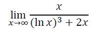
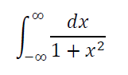
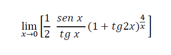
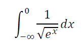
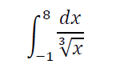
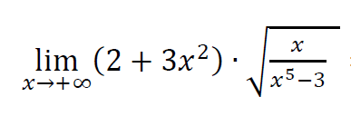
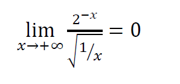
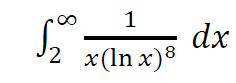
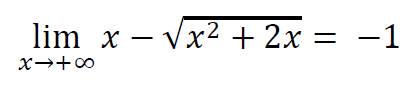
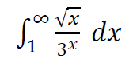

ESCOM
Inicio
EXAMEN 4
1.-Realice el siguiente limite usando L'Hopital.

a. 136/3
b. 13/2
c. 32
d. 1/2
2.- Determina si la siguiente integral es convergente o divergente.

a. Divergente
b. Converge a π/2
c. Divergente
d. Converge a π
3.-Realice el siguiente limite usando L'Hopital

a. 1/5 e
3
b. 1/2 e
8
c. 1/2 e
6
d. 2 e
3
4.-Determina si la integral es convergente o divergente

a. Converge a 2
b. Converge a 18
c. Diverge
d. Diverge
5.-Determina si la siguiente integral es convergente o divergente y encuentre su valor

a. Converge a 4/5
b. Diverge
c. Diverge
d. Converge a 9/2
6.-Realice el siguiente limite usando L'Hopital.

a. 3
b. 15.
c. 35
d. -3
7.-Realice el siguiente limite usando L'Hopital.

a. 3
b. -1
c. 0
d. 2
8.-Determina si la siguiente integral es convergente o divergente y encuentre su valor

a. Diverge
b. Converge a 8/{3(ln|2|)
4
}
c.Converge a 1/{7(ln|2|)
7
}
d. Diverge
9.-Realice el siguiente limite usando L'Hopital.

a. -1
b. 2
c. 0
d. 1
10.-Determina si la siguiente integral es convergente o divergente y encuentre su valor

a. Diverge
b.Converge a 2/9
c.Converge a 5
d.Converge a 1/3
Regresar.
Asegurate de contestar todas las preguntas.